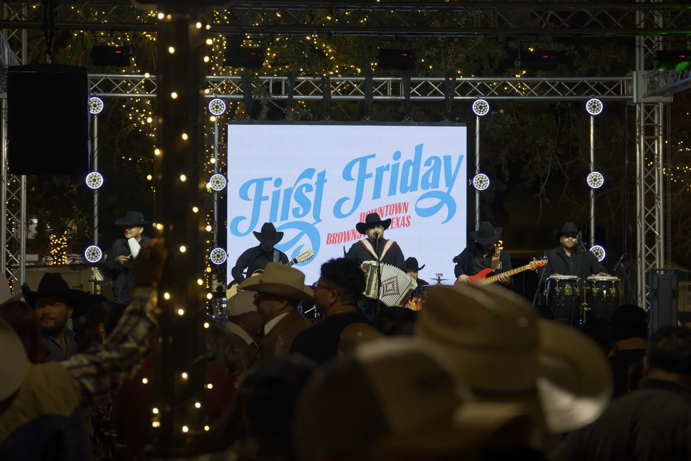
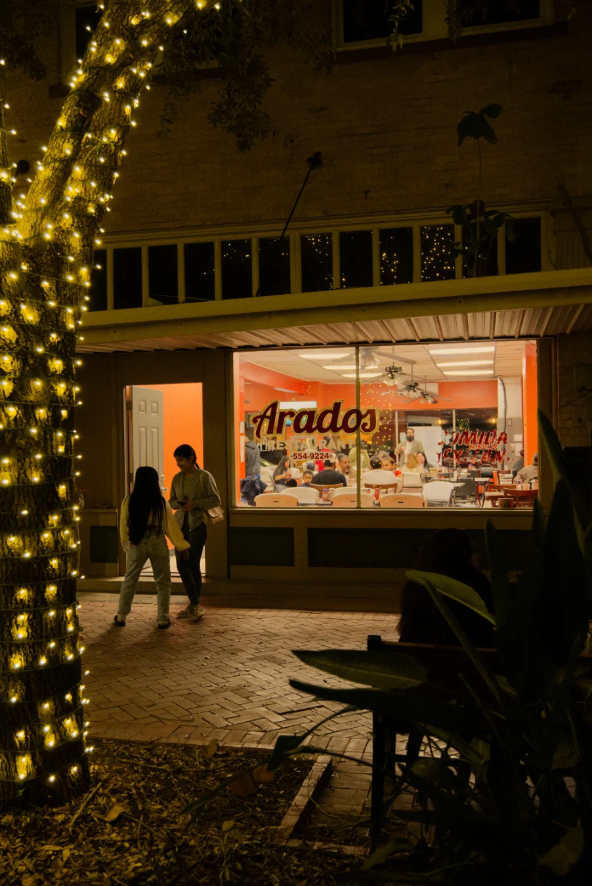
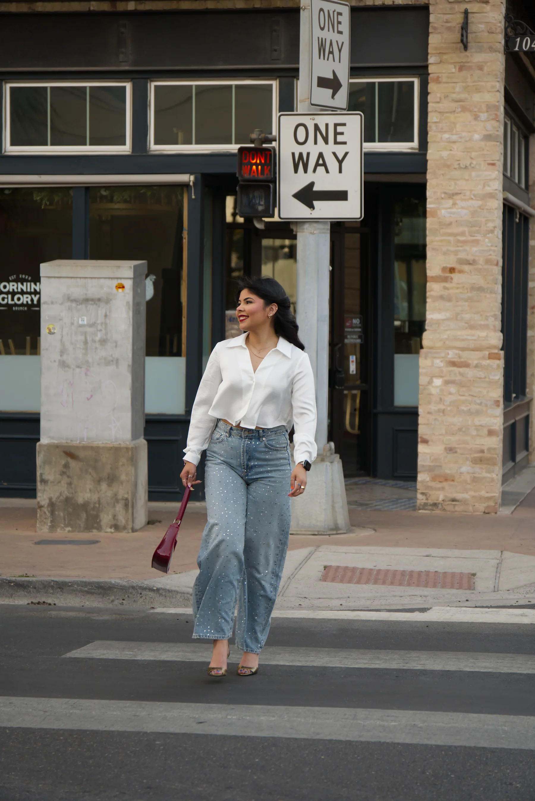
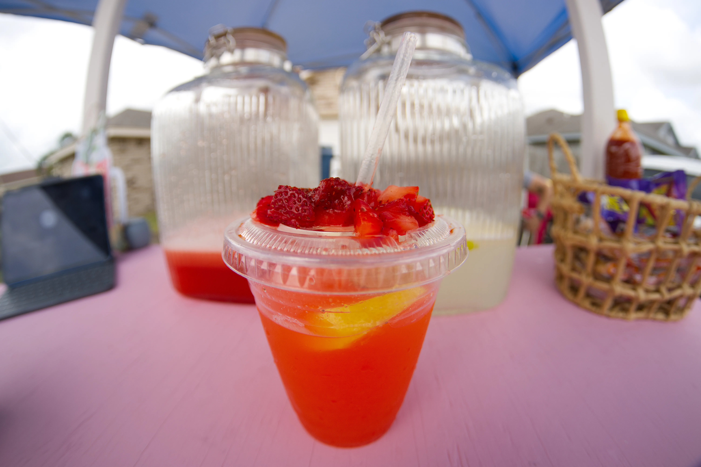

My Work
Selected projects. Click a category to view the full set.

Parties, graduations, community.

Real moments, real places.

Natural light, studio, and lifestyle portraits.

Product and lifestyle visuals for social and web.